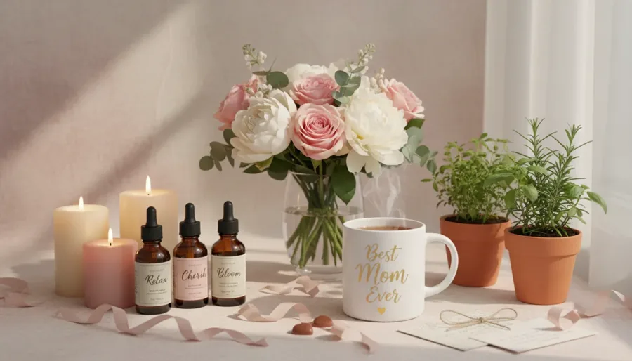

IMMAGINE ILLUSTRATIVA
IMMAGINE ILLUSTRATIVAESEMPIO EDITORIALE
VTech Kidi SuperStar
Esempio editoriale: modello e caratteristiche da verificare prima della scelta.
Prezzo non rilevatoLink Amazon in attesa di verifica
Un microfono karaoke è perfetto per feste e serate in famiglia. Prima di acquistarlo valuta se ha un altoparlante integrato e come si collega a telefono o TV.
Esplora le proposte per esigenze diverse. Quando l’API è attiva, immagini, titoli, prezzi e pulsanti arrivano direttamente dal catalogo Amazon.
Un microfono karaoke è un regalo legato al divertimento condiviso, ma non tutti i prodotti funzionano allo stesso modo. Alcuni sono giocattoli con effetti vocali integrati, altri microfoni Bluetooth autonomi con piccolo altoparlante, altri ancora richiedono un ricevitore, una cassa o un impianto esterno. Prima dell’acquisto occorre capire se verrà usato da un bambino, per cantare occasionalmente in casa oppure per organizzare vere serate tra amici.
La distinzione più utile non è solo il prezzo: controlla cosa è incluso nella confezione, se il microfono amplifica davvero la voce, come si collega alla musica e se sono necessari accessori aggiuntivi. Per i bambini, verifica sempre età consigliata, dimensioni, volume massimo e indicazioni di sicurezza del produttore.
Consulta anche come selezioniamo le idee regalo e la nostra raccolta di guide.
Per i più piccoli privilegia un dispositivo semplice, con pochi controlli riconoscibili e indicazioni chiare sull’età d’uso. Gli effetti sonori possono essere divertenti, ma assicurati che il volume sia gestibile e che i materiali siano appropriati. Se deve essere portato in viaggio, considera peso e alimentazione.
La selezione contiene suggerimenti editoriali: il link diretto e i dati commerciali saranno disponibili dopo la verifica.
IMMAGINE ILLUSTRATIVAEsempio editoriale: modello e caratteristiche da verificare prima della scelta.
IMMAGINE ILLUSTRATIVAEsempio editoriale: modello e caratteristiche da verificare prima della scelta.
I prezzi e le immagini dei singoli articoli vengono forniti da Amazon quando l’API è collegata; qui sono mostrati esempi editoriali senza prezzi inventati.
Un microfono economico può essere sufficiente per cantare in camera o improvvisare una festa, purché sia chiaro se incorpora un altoparlante. Verifica la batteria, le modalità di collegamento e l’eventuale ritardo tra musica e voce. Un accessorio che richiede un impianto separato non è equivalente a un karaoke pronto all’uso.
La selezione contiene suggerimenti editoriali: il link diretto e i dati commerciali saranno disponibili dopo la verifica.
IMMAGINE ILLUSTRATIVAEsempio editoriale: modello e caratteristiche da verificare prima della scelta.
IMMAGINE ILLUSTRATIVAEsempio editoriale: modello e caratteristiche da verificare prima della scelta.
I prezzi e le immagini dei singoli articoli vengono forniti da Amazon quando l’API è collegata; qui sono mostrati esempi editoriali senza prezzi inventati.
Per gruppi di amici o serate in famiglia valuta i set con due microfoni e controlla la compatibilità con casse, ricevitori e televisioni. La libertà di movimento conta, ma altrettanto importante è la stabilità del segnale. Controlla inoltre se tutti i cavi necessari sono realmente compresi nel set.
La selezione contiene suggerimenti editoriali: il link diretto e i dati commerciali saranno disponibili dopo la verifica.
IMMAGINE ILLUSTRATIVAEsempio editoriale: modello e caratteristiche da verificare prima della scelta.
IMMAGINE ILLUSTRATIVAEsempio editoriale: modello e caratteristiche da verificare prima della scelta.
I prezzi e le immagini dei singoli articoli vengono forniti da Amazon quando l’API è collegata; qui sono mostrati esempi editoriali senza prezzi inventati.
Dipende dal modello: alcuni integrano altoparlante ed effetti vocali, altri inviano la voce a una cassa o richiedono un ricevitore dedicato. Prima di scegliere verifica il tipo di uscita audio, la presenza di batteria e le istruzioni di accoppiamento.
Non sempre. La presenza del Bluetooth sul televisore non garantisce il supporto al microfono in ingresso. Servono una combinazione compatibile di TV, app e sistema audio oppure un collegamento dedicato previsto dal prodotto.
Controlla indicazioni d’età, dimensioni, volume regolabile, materiali e sicurezza della batteria. Per un regalo destinato a bambini piccoli evita prodotti con componenti non adatti alla loro fascia d’età.
I microfoni tutto-in-uno hanno un proprio altoparlante, ma i modelli professionali o i set senza speaker richiedono un diffusore esterno. Verifica cosa è incluso: microfono, ricevitore, cavi e alimentazione.
Molti modelli permettono l’uso con telefoni, ma le modalità cambiano: streaming della base musicale, registrazione della voce o entrambi. Controlla sempre la scheda tecnica per le funzioni effettive.
Questi quesiti riflettono temi ricorrenti nelle guide di settore e nella ricerca informativa. Non sono ordinati per volume: la priorità delle keyword va validata con Search Console e strumenti SEO.

Le casse portatili sono un regalo versatile per casa, viaggi e tempo libero. Confronta autonomia, dimensioni e resistenza all’acqua prima di scegliere.

Trousse, palette e piccoli kit sono regali apprezzati da chi ama il make-up. Scegli colori versatili e controlla ingredienti e preferenze personali.

Costruzioni, mattoncini e percorsi creativi aiutano a trasformare un regalo in un’attività. Valuta età consigliata, livello di difficoltà e spazio disponibile.